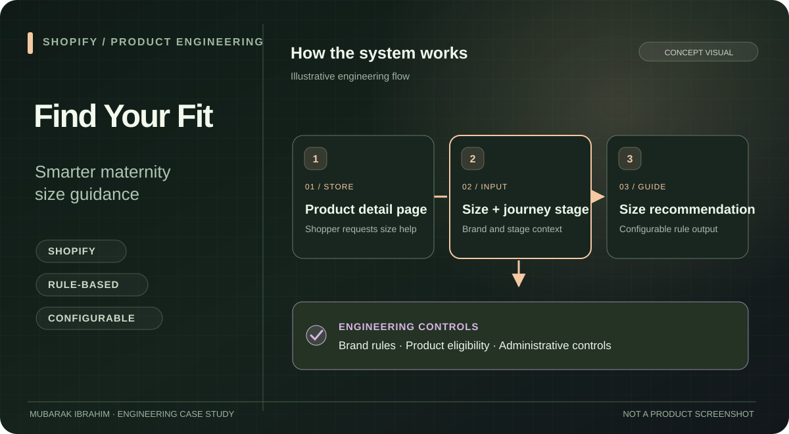

Find Your Fit
Deployed sizing guidance with configurable brand rules and exclusions.

Explore the engineering workflow
A shopper opens an eligible Shopify product page and requests personalized sizing guidance.
Widget development · Recommendation rules & admin controls
The constraint
Sizing guidance must consider the shopper journey, different brand rules and products that should not receive a recommendation.
Decision: Configurable recommendation rules
Rule-based recommendations use usual clothing size and journey stage, with supporting admin controls and product-level exclusions.
Tradeoff
Explicit rules let the store configure recommendations without introducing model inference. Recommendation quality still depends on the underlying sizing rules.
Implementation and controls
Integrated into Shopify product pages and handed over the codebase, including clarification of admin portal location during migration.
Evidence
The implementation is summarized here without publishing client source code or sensitive operational data. Quantitative results are not stated without measurement context.
Discuss this project
For engineering roles or project enquiries, contact mubastudio@gmail.com.